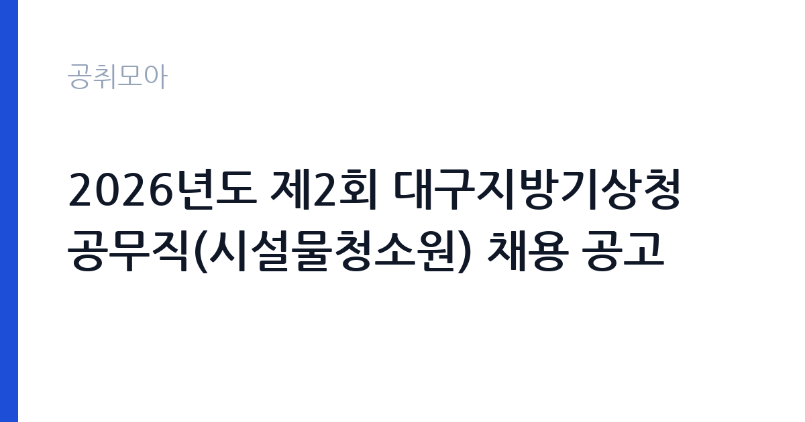

[국가기관] 2026년도 제2회 대구지방기상청 공무직(시설물청소원) 채용 공고
기상청 대구지방기상청 · 대구 · 마감 2026-10-26 (D-12) · 출처 나라일터

한눈에 보는 모집 조건
| 기관 | 기상청 대구지방기상청 |
|---|---|
| 공고명 | 2026년도 제2회 대구지방기상청 공무직(시설물청소원) 채용 공고 |
| 고용형태 | 공무직 |
| 근무지 | 대구 |
| 게시일 | 2026-10-15 |
| 마감일 | 2026-10-26 (D-12) |
지원자격, 이렇게 읽으세요
- 시설물청소원 2명
- 접수 ~2026-10-26 마감
- 세부 조건은 원문 공고문 확인
지원자격의 핵심은 세 가지입니다. 첫째, 연령은 만 19세 이상부터 정년인 65세까지이며 학력 제한이 없습니다. 둘째, 대구광역시에서 근무가 가능해야 하며 실제 근무지는 대구지방기상청 청사가 됩니다. 셋째, 채용 결격사유에 해당하지 않아야 합니다. 관련 경력이 있으면 우대하므로 청소나 미화, 시설관리 분야 경력이 있다면 경력증명서를 미리 준비하시기 바랍니다. 접수 방법이 이메일 단일 창구라는 점이 함정이므로, 방문이나 우편 접수는 받지 않는다는 점을 유의하고 마감일 혼잡에 대비해 여유 있게 접수하시기 바랍니다.
이 공고의 포인트
이 공고의 가장 큰 포인트는 공무직이라는 고용 형태입니다. 공무직은 기간의 정함이 없는 근로자로 정년까지 안정적으로 근무할 수 있습니다. 모집 인원이 2명으로 소규모이지만 응시 자격 문턱이 낮아 지원 자체는 누구나 할 수 있습니다. 접수 기간이 10월 22일부터 26일까지 단 5일로 짧은 점이 변수이므로 이메일 접수 서류를 미리 갖춰 두는 것이 유리합니다. 문의처(053-282-0113)가 명시되어 있으니 서류 관련 의문은 접수 전에 전화로 확인하시기 바랍니다.
전형은 어떻게 진행되나
전형 절차의 세부 단계는 원문 공고문의 첨부파일에서 반드시 확인하셔야 합니다. 공무직 채용은 일반적으로 서류심사와 면접시험으로 진행되며, 동점자 처리 기준과 예비합격자 운영 여부가 공고문에 명시되는 경우가 많습니다. 이메일 접수 특성상 접수 확인 메일 수신 여부를 챙기고, 누락 서류가 있으면 접수 기간 안에 보완해야 합니다. 면접은 직무수행계획과 근무 의지를 중심으로 평가되는 경우가 많으니, 시설물 청소 업무의 안전 수칙과 위생 관리 지식을 정리해 두시기 바랍니다.
원문에서 확인한 전형 방식
○ 모집분야 : 시설물청소원 ○ 고용형태 : 공무직 근로자 ○ 자격요건 : 19세 ~ 정년(65세), 채용결격사유 미해당, 대구광역시에서 근무 가능한자, 관련 경력 우대 ○ 접수기간 : 2026년 10월 22일 ~ 2026년 10월 26일 ○ 응시방법 : 이메일을 통한 접수(kycheol13@korea.kr) ○ 문 의 처 : 053-282-0113 자세한 사항은 첨부파일을 참조하시기 바랍니다.
이런 분께 추천해요
- 정년인 65세까지 안정적으로 일하고 싶은 대구 거주 구직자
- 청소나 미화, 시설관리 분야 경력을 살려 공공기관에 들어가고 싶은 분
- 학력이나 스펙보다 성실함과 근무 지속성을 강점으로 가진 분
지원 전 체크리스트
- 이메일 주소(kycheol13@korea.kr)와 접수 기간(10월 22일부터 26일)을 달력에 표시했습니다
- 채용 결격사유 해당 여부를 확인했습니다
- 관련 경력이 있다면 경력증명서를 발급받았습니다
- 원문 공고문의 첨부파일(응시원서와 자기소개서 양식)을 내려받았습니다
모집 일정과 제출 타이밍
접수 기간이 10월 22일부터 26일까지로 짧고 접수 시작일이 공고 게시일보다 늦습니다. 접수 첫날에 서두르기보다 서류를 완비한 뒤 23일에서 24일 사이에 접수하는 것이 안전합니다. 이메일 접수는 마감일 18시 기준인 경우가 많으니 원문에서 마감 시각을 확인하시기 바랍니다. 합격자 발표 일정과 임용 예정일도 원문 첨부파일에서 확인하고, 발표일을 달력에 표시해 두시기 바랍니다.
직무 이해하기: 국가기관
시설물청소원은 청사 로비와 복도, 화장실, 외부 구역 등의 청소와 쓰레기 분리배출, 위생 소모품 보충, 계절별 대청소 등을 맡습니다. NCS 분류상 경비와 청소 직종의 환경미화 직무에 해당하며, 청소 도구와 세제 사용법, 산업안전보건 수칙, 공중위생관리 지식이 필요합니다. 기상청 청사는 관측 장비와 전산실 등 보안 구역이 있어 출입 통제와 보안 수칙 준수가 중요한 직무 특성입니다.
자기소개서 작성 팁
공무직 자기소개서는 거창한 포부보다 근무 지속성과 성실함을 보여주는 것이 핵심입니다. 청소나 미화 경력이 있다면 구체적인 현장(건물 규모, 담당 구역, 사용 장비)을 적어 신뢰를 주시기 바랍니다. 경력이 없다면 위생 관념과 안전 수칙 준수 의지, 대구 근무 가능 사유를 구체적으로 쓰시기 바랍니다. 이메일 접수용 자기소개서는 지정 양식이 있는지 원문에서 확인하고, 분량과 항목을 벗어나지 않게 작성하시기 바랍니다.
면접 준비 포인트
면접에서는 장기근무 의지와 직무 이해도, 안전과 위생 의식을 묻는 경우가 많습니다. 시설물 청소 시 미끄럼과 약품 사고 예방법, 민원인 응대 태도를 묻는 질문에 대비하시기 바랍니다. 기상청의 대민 업무 특성상 청결 상태가 기관 이미지에 직결된다는 점을 언급하면 좋은 인상을 줄 수 있습니다. 복장은 단정하게 하고 답변은 짧고 명확하게 하시기 바랍니다.
급여·근무조건 읽는 법
이 공고문에는 구체적인 보수 금액이 명시되어 있지 않으므로, 정확한 급여는 원문 공고문의 첨부파일(보수 관련 항목)에서 확인하셔야 합니다. 공무직 보수는 통상 월급제 기본급에 명절휴가비와 정액급식비, 가족수당 등 수당이 더해지는 구조이며 기관별 보수 규정에 따라 책정됩니다. 대구지방기상청 공무직 보수표가 첨부파일에 포함된 경우가 많으니 접수 전에 반드시 열어 보시기 바랍니다. 실수령액은 세전 총액에서 4대보험 본인부담금과 소득세를 제외한 금액이 됩니다.
자주 묻는 질문
- 학력이나 전공 제한이 있나요?
원문 발췌상 학력이나 전공 제한은 없으며, 만 19세 이상 65세 이하로 대구 근무가 가능하면 지원할 수 있습니다. 채용 결격사유만 확인하시면 됩니다. - 접수는 어떻게 하나요?
이메일(kycheol13@korea.kr)로만 접수하며 기간은 10월 22일부터 26일까지입니다. 방문이나 우편 접수는 안내되어 있지 않으니 원문에서 제출 서류 목록을 확인하시기 바랍니다. - 근무지는 어디인가요?
대구지방기상청 청사(대구광역시)가 되며, 대구에서 근무가 가능한 자가 지원 요건입니다. 세부 근무 장소와 시간은 원문 첨부파일에서 확인하시기 바랍니다.
함께 보면 좋은 공고
[국가기관] 2026년 제7회 동천안우체국 공무직 상시계약집배원 채용계획 공고 — 마감 2026-10-21[국가기관] 2026년 제6회 동천안우체국 공무직 상시계약집배원 채용계획 공고 — 마감 2026-10-21[국가기관] [국가데이터처 원주]2027년 가계금융복지조사를 위한 가구관리 도급조사원 모집 공고 — 마감 2026-10-21출처: 나라일터 공개정보를 바탕으로 공취모아가 정리한 안내글입니다. 모집 조건·일정은 변경될 수 있으니 지원 전 반드시 원문 공고문을 확인하세요. 본 글은 정보 제공용이며 합격을 보장하지 않습니다.